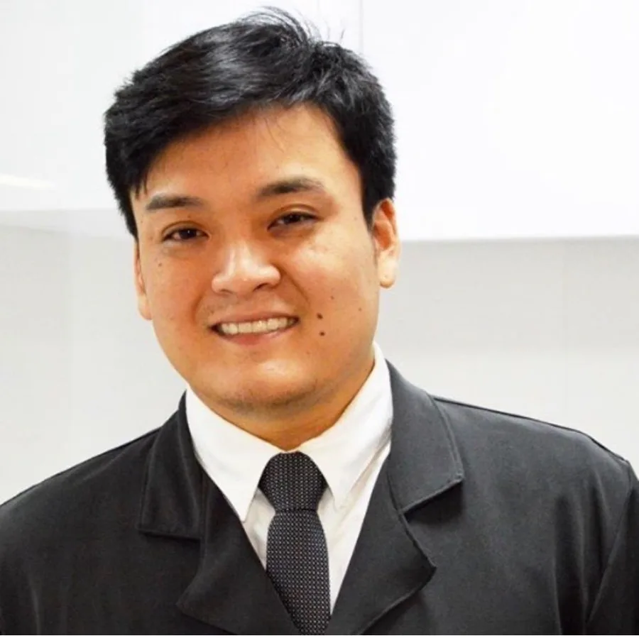
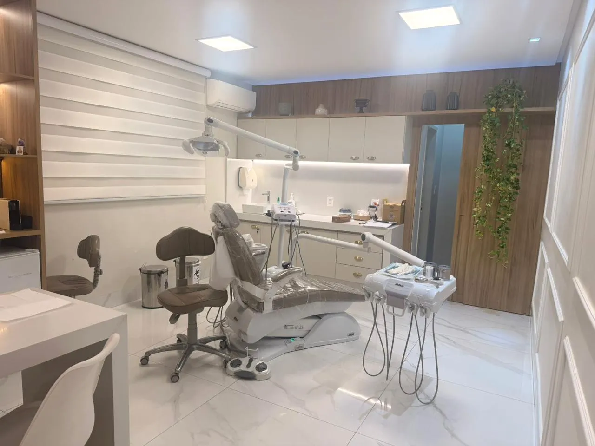

Médico · Cirurgião-Dentista · Bucomaxilofacial
Extração de dente é cirurgia. Faça com quem é cirurgião.
Sisos, dentes inclusos e casos complexos em Goiânia.


Quem vai cuidar de você
Dupla formação. Um único foco: a sua segurança.
Cirurgião-dentista especialista em Bucomaxilofacial e médico. Você é avaliado por quem enxerga a boca e a saúde como um todo.
- 2012Odontologia · UNIP
- 2016Especialista · FUNORTE
- 2022Medicina · UNIFAN
- Médico e dentista
- Especialista em cirurgia
- Preparo em emergência
- Do início ao pós-operatório
Mão de cirurgião. Olhar de médico.
Formação
Credenciais que você pode conferir.
- 2012
Odontologia
Universidade Paulista
- 2013
Aperfeiçoamento em Cirurgia Buco-Maxilo-Facial
EAP-GO
- 2016
Especialização em Cirurgia e Traumatologia Bucomaxilofacial
FUNORTE
- 400 h
Estágio em Cirurgia Bucomaxilofacial
Hospital Cidade Jardim
- 2022
Medicina
Faculdades Alfredo Nasser
- ATLS · ACLS
Suporte avançado de vida
Trauma e cardiovascular

Como funciona
Simples, do início ao fim.
- 01
Avaliação
Exame clínico e de imagem.
- 02
Planejamento
Tudo explicado antes.
- 03
Cirurgia
Feita pelo próprio Dr. Renato.
- 04
Pós-operatório
Orientação e retorno.
Tratamentos
Foco em extrações. Preparo para o que for preciso.
Extração de sisos
Inclusive mal posicionados ou causando dor.
Avaliar meus sisosDentes inclusos
Dentes que não nasceram.
Extrações complexas
Raízes e dentes fraturados.
Implantes dentários
Reposição do dente perdido.
Enxerto ósseo
Reconstrução do volume ósseo.
Cirurgia da face
Estética e funcional.
Dúvidas
Antes de agendar.
Todo siso precisa ser extraído?
Não. Depende da posição do dente e dos sintomas. A avaliação com exame de imagem define.
É feito com anestesia?
Sim, com anestesia local. Tudo é explicado antes do procedimento.
Por que um cirurgião que também é médico?
A Medicina amplia a avaliação da sua saúde geral e soma experiência em urgência e emergência.
Como é o pós-operatório?
Orientações por escrito e retorno agendado para acompanhar a cicatrização.
Agende sua avaliação
O primeiro passo é entender o seu caso.
Agendar pelo WhatsApp- Horário
- Telefone
- E-mail